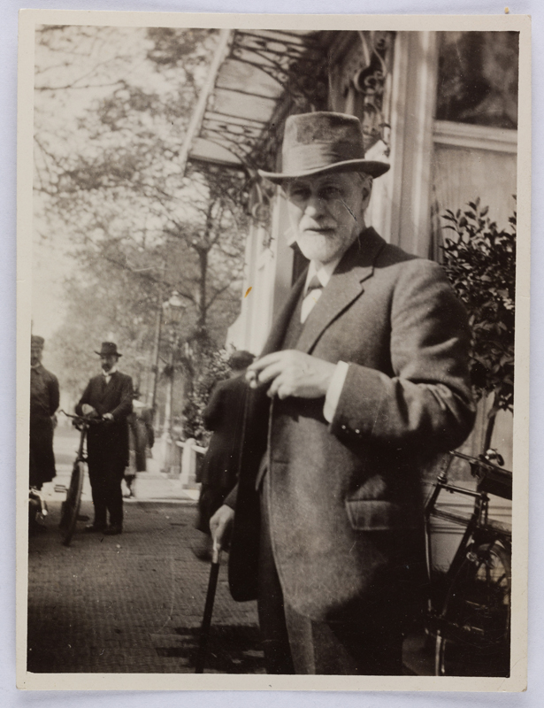

PSYCHOANALYTIQUE BITES!
HOME BIBLIOGRAPHY QUOTES PAPERS AND PRESENTATIONS VIDEOS CONTACT USFreud at IPA Congress 1920, Netherlands.
A layman will no doubt find it hard to understand how pathological disorders of the body and mind can be eliminated by 'mere' words. He will feel that he is being asked to believe in magic. And he will not be so very wrong, for the words which we use in everyday speech are nothing other than watered-down magic.
Psychoanalysis is about conversations, yet as Adam Phillips has pointed out, much of psychoanalytic works resist conversations from happening. This is not necessarily a critique to psychoanalysis itself but rather the way psychoanalysts have written about their work. The goal here is to mitigate some of that, to work as a group on making conversations around psychoanalysis accessible through presentations, open-ended discussions, and much more. These attempts are meant to be self-contained and "bite-sized" thus "Psychoanalytique Bites".
Other than making things "accessible", one of the other goals is to form bridges across different schools of psychoanalysis. This allows us to find similarities, differences, places of potential improvements and so on from radically different ways of practice.
We welcome you in joining us and making conversations happen!